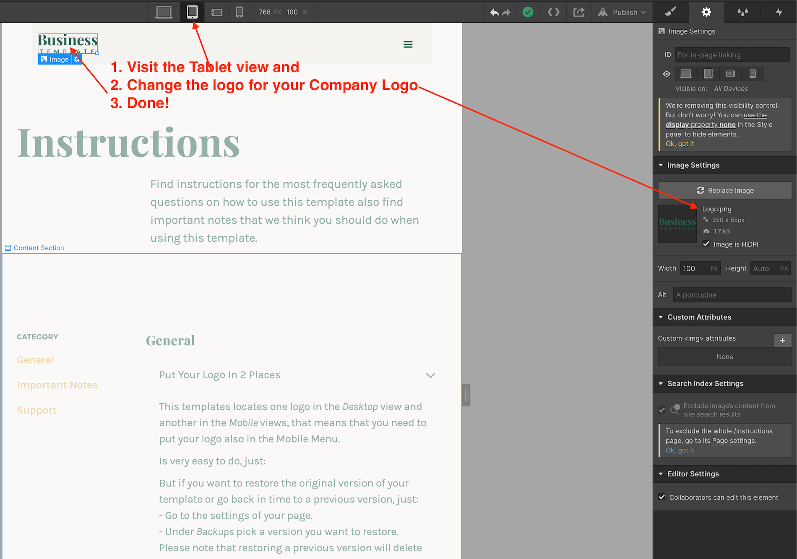

Instructions
General
This templates locates one logo in the Desktop view and another in the Mobile views, that means that you need to put your logo also in the Mobile Menu.
Is very easy to do, just visit the Tablet view and replace the current logo with yours.
As recommendation you can save your work from time to time, just hit Ctrl + S this will save a version of your work that you can go back or restore later.
Also pressing Ctrl + Z will undo previous actions.
But if you want to restore the original version of your template or go back in time to a previous version, just:
- Go to the settings of your page.
- Under Backups pick a version you want to restore.
Please note that restoring a previous version will delete your current work.

You can save them as "Draft"; saving the page as Draft will avoid Google to index your pages and will not be published in your site.
Just go to the settings of the page and Save as Draft.

1. Select the element to edit
2. Go to the Style Panel and under the Selector SELECT the "All x element" .
3. Make your edits.

Please watch this video:
Important Notes
In order to have crisp images on most modern devices, you need to upload 2x image sizes.
If you want to achieve better loading time we recommend to optimize all your pictures using services like Tinypng.com
For a high quality visual experience for your users we recommend using svg icons. You can visit flaticon.es and specially Joe Harrison collection find and customize svg icons.
Support
If you need further help you can contact me here.